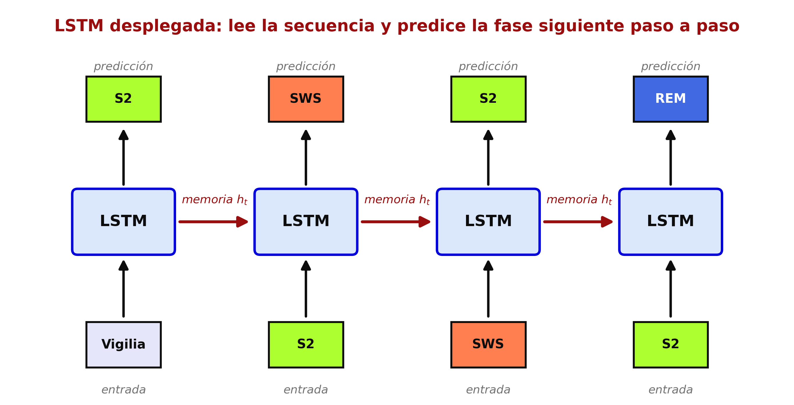
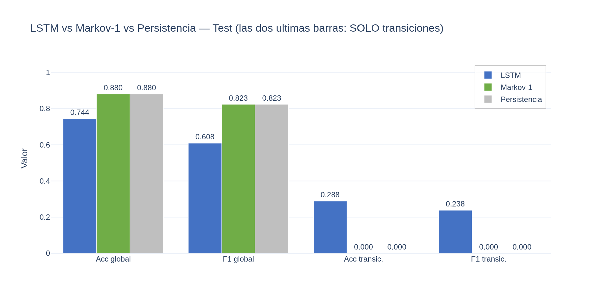
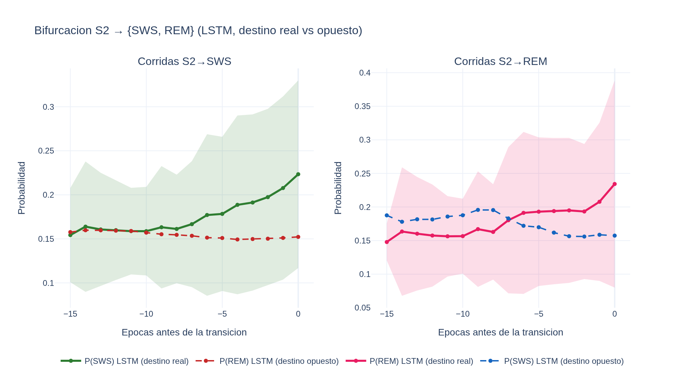
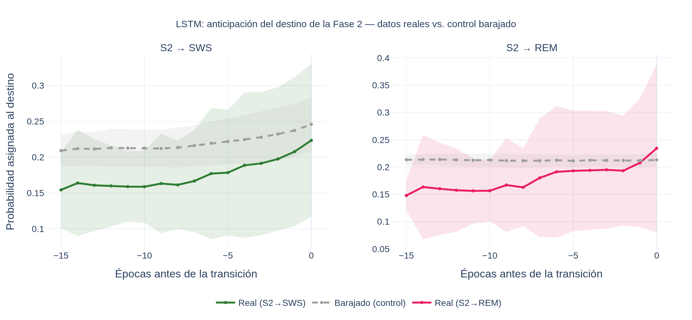

¿Puede una red leer la noche y anticipar la fase siguiente?
Word2Vec→LSTM→fase siguiente

| Modelo | Para qué |
|---|---|
| Real | El modelo de lenguaje del sueño: aprende el orden verdadero de la noche. |
| Barajada | Control: misma noche con el orden destruido. Sirve para comprobar que lo aprendido es temporal. |
Una para aprender · otra para verificar.
| Modelo | Transiciones |
|---|---|
| LSTM | 0.29 |
| Markov-1 | 0.00 |
| Persistencia | 0.00 |
Los demás solo repiten la fase anterior; fallan en cada cambio. La LSTM es la única que predice transiciones.

Hay memoria latente sobre hacia dónde va la noche.

La estructura es temporal real, no azar.

Predice transiciones · anticipa el destino de S2 · y el control demuestra que es real.